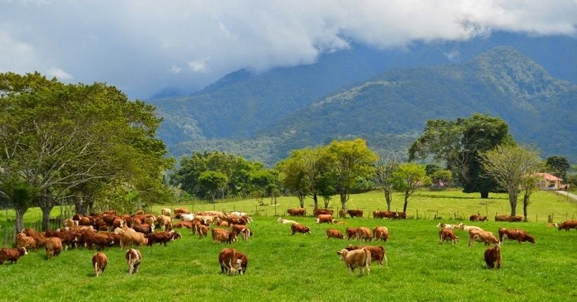

Padang Mangateh
Padang Mangateh yang terletak di Kecamatan Luak, Kabupaten Lima Puluh Kota, Sumatera Barat, merupakan hamparan padang rumput hijau seluas sekitar 280 hektare yang berada di kaki Gunung Sago dan dikenal sebagai peternakan sapi terbesar di Asia Tenggara sejak zaman Belanda pada tahun 1916. Keindahan alamnya yang memukau dengan lanskap mirip Selandia Baru, udara sejuk di ketinggian 700–900 meter, serta ribuan sapi yang dibiarkan merumput bebas menjadikan tempat ini dijuluki “New Zealand-nya Sumatera Barat”. Selain menawarkan panorama alam yang cocok untuk wisata foto dan trekking ringan, Padang Mangateh juga berfungsi sebagai lokasi edukasi peternakan. Tempat ini bisa dikunjungi secara gratis namun harus melalui proses izin terlebih dahulu, dan biasanya hanya dibuka saat hari kerja. Pesonanya menjadikan Padang Mangateh sebagai destinasi alam yang tenang, sejuk, dan sangat instagramable.
Kembali